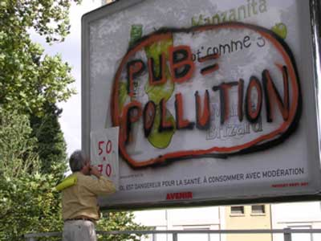
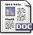

| |
Site dédié à la publication d'informations communiquées par le Collectif des déboulonneurs. En aucun cas ce site n'appelle à des actions illégales. | |
 |
||
|
Accueil du site > Rouen > 7ième barbouillage à Rouen, jeudi 22 juin 2006.
Que 15 activistes antipublicitaires non-violents se retrouvent à 17h. Après l’accueil des personnes qui viennent pour la première fois, et le rappel du déroulement des opérations, le groupe part avenue Jean Rondeaux. Cette grande avenue bordée d’arbres, située rive gauche après le Pont Guillaume-Le-Conquérant, est toujours embouteillée de 7h30 à 19h. Les voitures y circulent par groupes de cinquante environ, avec des arrêts répétés et longs entre les feux rouges. Or les afficheurs JCDecaux, Avenir et Clear Channel exploitent le phénomène de ces embouteillages en agressant les automobilistes avec une publicité commerciale tapageuse ! 17h20 : le barbouilleur enjambe la double passerelle placées en contre-bas de deux panneaux Avenir. Il sort ses bombes de peinture et les agite bien, pendant que les autres activistes devenus 17 se mettent une feuille A4 jaune dans le dos avec du scotch double face à moquette. Un panneau déroulant est recouvert du graffiti « Nous, vous, des cibles ? », puis l’autre avec « Pub = pollution ». Les lettres sont épaisses, en noir et orange. Excellent et beau visuel. Sur la feuille A4 jaune que chacun porte depuis le début du barbouillage, on retrouve la même littérature que celle des graffitis. Les journalistes sont là. Ils connaissent leur métier. Tout va bien. Mais que se passe-t-il dans les voitures ? Oh surprise, il y a des personnes dans les voitures ! Elles voient calmement les panneaux barbouillés ! Elles ont le temps de se faire une idée par elle-même du message qu’on cherche à faire passer avec non-violence. Plus de 500 tracts sont distribués en moins de vingt minutes, avec sourire et petits mots sympas.. Ils expliquent pédagogiquement le pourquoi et le comment de l’action du Collectif des déboulonneurs qui sévit aussi à Paris, Lyon, Montpellier, mais aussi à dans le Gard. Ce tract annonce également le procès de deux barbouilleurs montpelliérains, Jean-François Lenoir et Geoffroy Maguet, qui passent en correctionnel le 27 juin. Sur les centaines de voitures arrêtées, seules trois ou quatre occupants ont été « pas du tout réceptifs » à notre action, « ben moi j’aime bien la pub ! » a lancé l’un d’eux. L’activiste répond par un petit signe sympathique et respectueux, ce qui permet d’apaiser la tension au lieu qu’elle ne se transforme en affrontement verbal. Une dame a même remonté sa vitre et bloqué les quatre portes de sa voiture en voyant qu’une jeune fille du groupe s’apprêtait à lui donner notre tract ! À part ces rares faits, la quasi-totalité des automobilistes a manifesté une réaction allant de l’étonnement sympathique à des applaudissements, avec souvent des propos de soutien, du genre « vous avez bien raison », « je suis d’accord avec vous », « vous êtes gonflés, c’est bien », « mais oui, raz-le bol de la pub, ici et partout », « merci, je vais lire tranquillement votre tract »... 
17h40 : toujours pas de policiers en vue. Comme prévu, une petite concertation a lieu pour sortir du chapeau la suite du plan : le barbouilleur va à pied se livrer à l’hôtel de police, accompagnés par les activistes qui le désirent. 17h50 : arrivée devant l’hôtel de police. Nous ne sommes pas attendus ! Le barbouilleur salue les ami(e)s devant l’entrée puis s’engouffre seul dans le commissariat de la Répubique. Où doit-il aller ? Il le demande à une policière, franchement décontenancée, par ces termes : « je viens d’écrire deux graffitis antipublicitaires sur deux grands panneaux déroulants… » ; avec en réponse : « mettez-vous, Monsieur, dans la file d’attente de l’accueil ! ». Et voici que le barbouilleur se retrouve debout, dans une file d’attente, avec à la main deux bombes de peinture dégoupillées, derrière un monsieur qui râle parce que sa voiture est partie en fourrière… Le groupe des déboulonnuers attend dehors, sans faire d’atroupement. Trois policiers sortent successivement pour se rassurer qu’aucun ramdam ne se prépare. Le barbouilleur explique son cas, plusieurs fois… , et finit dans le bureau d’un policier pour y faire une déposition dans laquelle il certifie son délit et l’explique, ne parlant toujours que de lui, répondant toujours par « je n’ai rien à déclarer » à toute question ne se rapportant pas directement à son acte de désobéissance civile. La déposition est communiquée au Parquet à 19h. Le magistrat de service ne prononce aucune garde à vue immédiate. 19h15 Le barbouilleur repart chez lui. Samedi 24 juin : un bon et fidèle article, avec photo, dans Paris-Normandie. Dimanche 25 juin : idem dans Liberté-Dimanche. D’autres photos dans notre galerie 
Tract distribué ce jour
|
|
Site utilisant SPIP - Hébergement Ouvaton
|